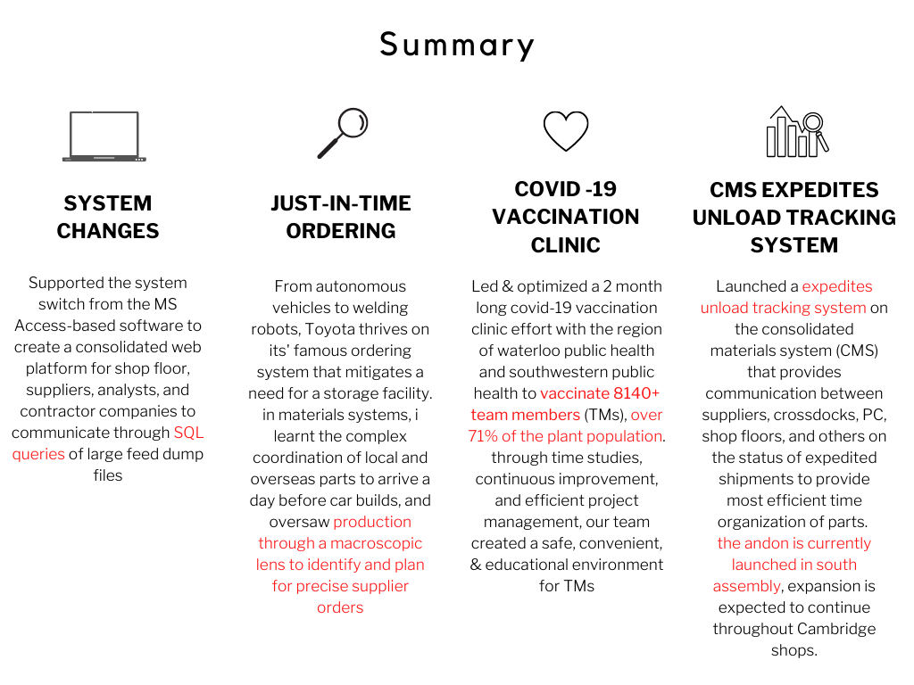
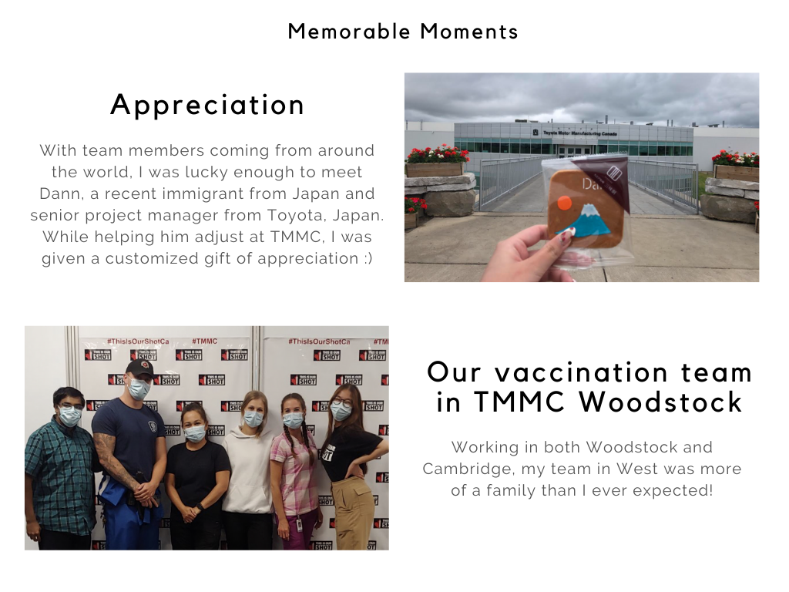
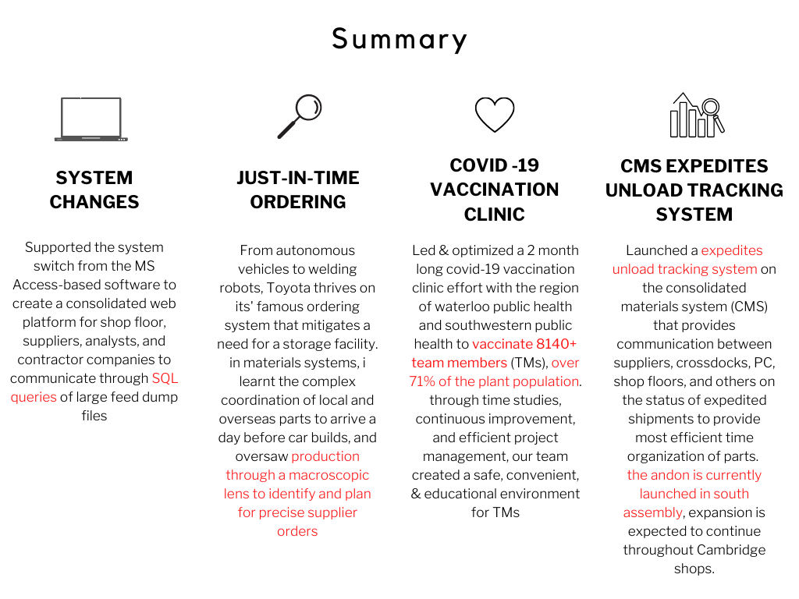
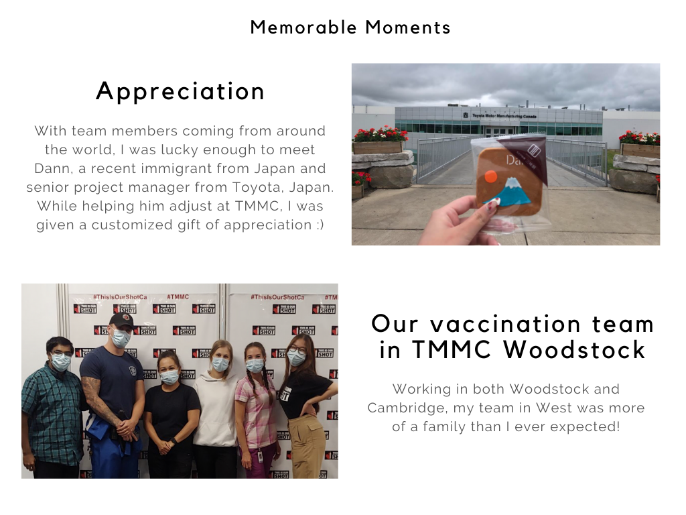

what is a tbp?
the toyota business practice is a way of analyzing problems through an 8-step process that focuses on identifying all aspects of a problem through genchi genbutsu (go and see), yokoten (best practice sharing), and kaizen (continuous improvement)
for coops, the tbp is an essential project that capstones your time at TMMC. for me, I'm currently working on an automated tracking system for progressive unloads of suspension parts & their docking.

 



Supervisor Comments
Serena has excelled at her assigned tasks throughout the term, demonstrating a strong ability to grasp new concepts, break down and understand data and apply kaizen thinking in her work.
She has also been very effective in handling multiple tasks at once and prioritizing appropriately, even in the midst of quickly changing priorities. She has also clearly displayed the ability to work effectively both in teams and independently, including single-handedly managing one of TMMC's vaccination clinics on a day to day basis.
She has also demonstrated clear enthusiasm for her work and brings a positive attitude. She is open to learning and seeks to ask questions and "go and see" to support her work efforts. In asking questions she understands quickly and can translate that learning into implementation effectively.
Serena has been a valudable addition to the PC Materials Systems team this term.
let's go places.